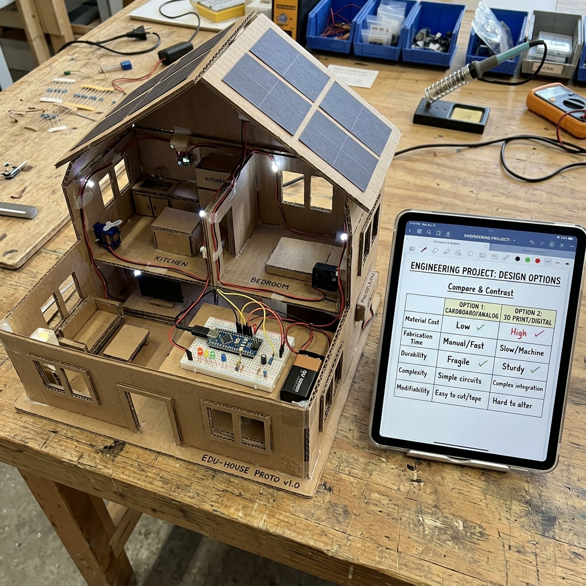

What This Stage Was About
After completing his introduction to the Micro:bit, my student moved into the design phase of the project. In this stage, he brainstormed possible features for the final house and then built multiple prototypes of each idea. For every feature, he created a Micro:bit‑controlled version and one or more standalone circuit versions. He documented each prototype and used a compare‑and‑contrast chart in his digital notebook to analyze how the different versions worked. This helped him decide which approach would be the best fit for the final house.
Digital Tools We Used
Micro:bit PICRAT: Creative–Transformation
MakeCode PICRAT: Active–Transformation
Digital Notebook PICRAT: Passive–Replacement
Standalone Circuits
Student Artifacts & Digital Notes


What We Did
- brainstormed features
- built Micro:bit versions
- built multiple standalone versions
- documented each prototype
- created a compare‑and‑contrast chart
- analyzed strengths and limitations
- selected final features
My Reflection
He demonstrated real engineering thinking.
Student Reflection
“I liked trying different ideas and seeing which ones worked better.”
ISTE Standards Addressed
1.1 Empowered Learner
The student used Micro:bit code, breadboard wiring, and standalone circuits to explore electronics at their own pace—testing inputs, outputs, sensors, and actuators while taking ownership of how each feature brought their foam house to life.
1.4 Innovative Designer
The student designed and built functional house features—doorbells, lights, motion sensors, alarms, and servo‑powered doors—iterating on both code and wiring to solve problems, refine behavior, and meet design constraints.
1.5 Computational Thinker
The student broke down each project into logical steps, created sequences and conditionals in MakeCode, and used systematic troubleshooting to diagnose issues in both code and physical circuits, applying clear reasoning to achieve working solutions.
1.6 Creative Communicator
The student communicated their design choices through circuit diagrams, photos, wiring explanations, and code walkthroughs, clearly describing how each electronic feature functioned within the foam house.